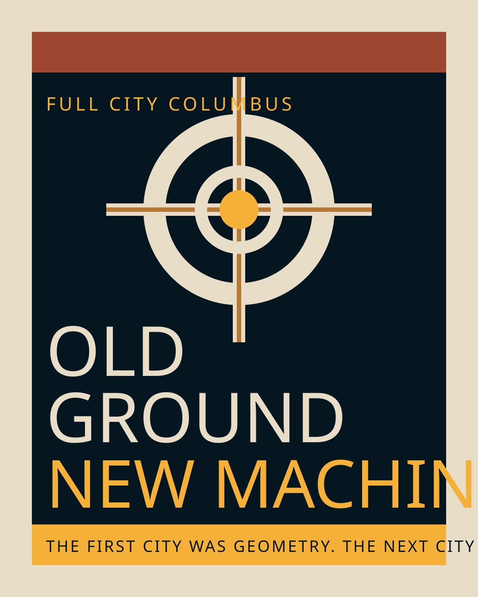
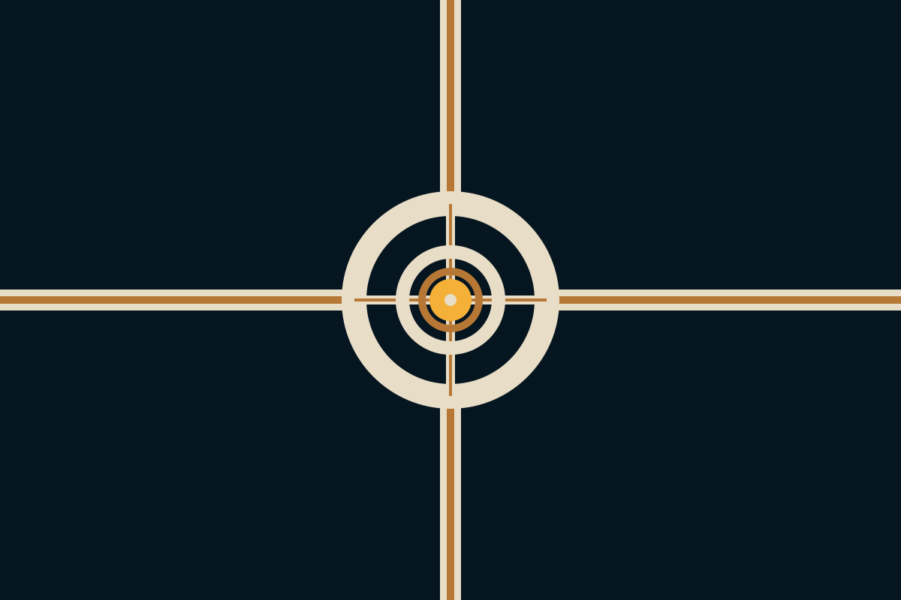
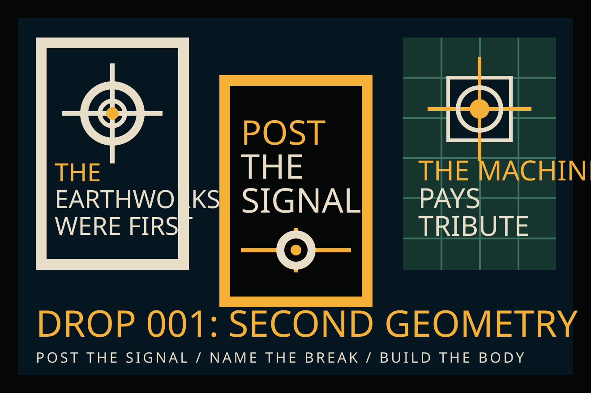

Neo Columbus / old place, new body
The place is older than the name.
First city: geometry.
Next city: us.
From earthwork to street grid.
From confluence to metropolis.
Photo-based Columbus skyline edit. Source: puroticorico, CC BY 2.0.
No more half-city
The first city was geometry
The next city is us
From circle to capital
From confluence to metropolis
The machine pays tribute
Neo Columbus arrives
No more half-city
The first city was geometry
The next city is us
From circle to capital
From confluence to metropolis
The machine pays tribute
Neo Columbus arrives
01 / old place
Ohio was monumental before Ohio was modern.
02 / great city
Many settlements. One body.
Megalopolis meant Great City. Metropolis means chief city. Neo Columbus is the gathered body of an old charged place.
- Rivers
- Roads
- Hospitals
- Universities
- Immigrants
- Suburbs
- Towers
- State power
- Highways
- Money
- Motion
- Scale
03 / second geometry
Before the grid:
circle. line. river.
First geometry: earth.
Second geometry: city.
04 / earthwork futurism
Old ground.
New machine.
Public myth you can wear.
Flag-simple. Manual-disciplined. Street-repeatable. Souvenir-grade.

05 / city signal
The city beneath the city has a flag now.
River navy. Civic axes. Limestone ring. Transit amber core.
{kind=link}

06 / drop 001
The earthworks were first.
The next city is us.
Post the signal. Name the break. Build the body.

{kind=link}
{kind=link}
07 / civic stack
Growing anyway.
Choose city.
Columbus is growing anyway. The question is whether it becomes a pile of projects or a city.
- 01 Build the body. Homes, density, approvals, public land, no small-town zoning costume.
- 02 Move the body. LinkUS, COTA, bus shelters, sidewalks, frequency, night service.
- 03 Keep the body housed. Tenant counsel, preservation, repair, habitability, eviction defense.
- 04 Make the body safe. Visible safety, violence interruption, light, youth rooms, clean corridors.
- 05 Power the body. Water, grid, data centers, public benefit, no silent extraction.
- 06 Give the body a center. Downtown as civic living room, not an office district in recovery.
- 07 Open the body. Open source civics, public issue boards, flyers, novices welcome.
08 / AI civic dividend
If the machine lives here, it pays tribute to the city.
AI is not magic. It is water, land, power, labor, and data.
- Water share Public reporting, recycled cooling, drought plans, no hidden draw.
- Power share Data centers pay for the grid they force into existence.
- Land share No dead boxes on civic ground without stormwater, trees, design, and repair.
- Tax share If public revenue is waived, housing, transit, and water get paid back.
- Compute share Cloud credits for schools, libraries, artists, nonprofits, and local builders.
- Data share Public data belongs in a privacy-first commons, not a black-box empire.
09 / movement
COTA is not charity.
It is the city's nervous system.
- Frequency is dignity.
- The stop is a room.
- The wait is a tax.
- Move the whole body.
10 / anti-beige law
Beige is a sedative.
More homes. More transit. More public beauty. No dead walls where life should be.
Build the city. Do not beige it to death.11 / print this
Campaign wall
12 / open source signal